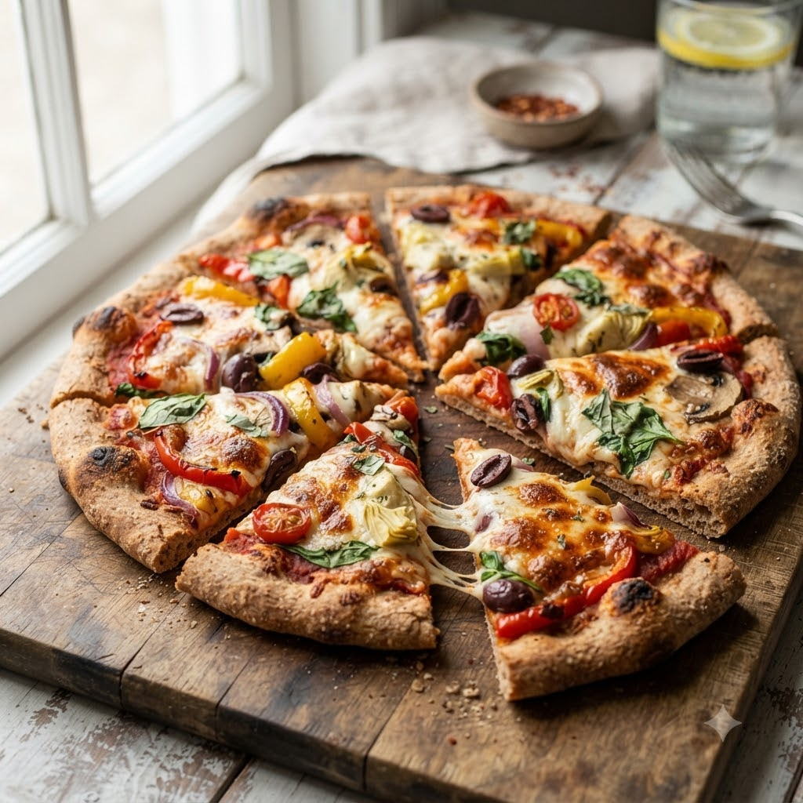

Whole Wheat Pizza

Whole Wheat Pizza
Airfryer – Bake 190°C 11 min — Serves 2
Ingredients
- 1 whole wheat pizza base or flatbread
- 3 tbsp pizza sauce
- 1/2 cup grated mozzarella
- Toppings of choice (capsicum, onion, corn, olives)
- 1/2 tsp oregano & chilli flakes
Method
1Preheat: Preheat the Airfryer to 190°C for 4 minutes before adding the food to the basket.
2Spread sauce evenly over the base.
3Add cheese and toppings; sprinkle oregano and chilli flakes.
4Place carefully in the basket.
5Bake at 190°C for 11 minutes until the cheese melts and the base is crisp.